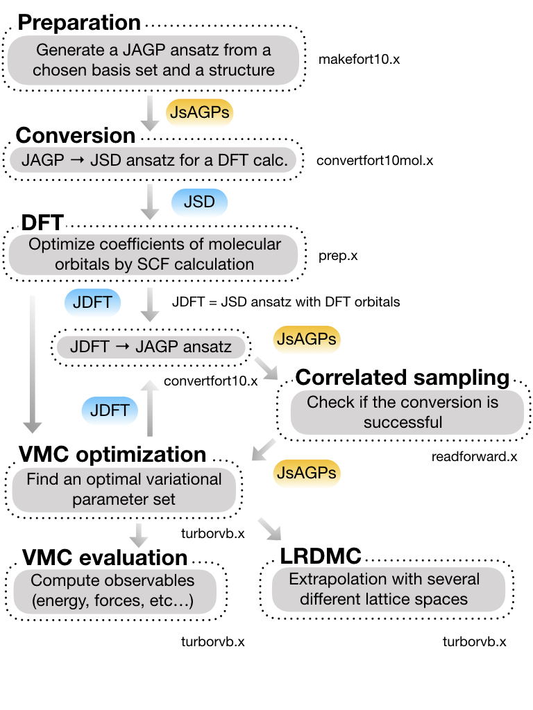
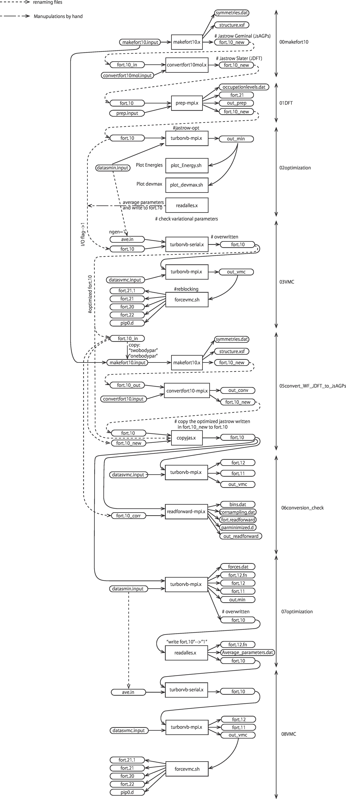

01_01Hydrogen_dimer¶
00 Introduction¶
From this tutorial, you can learn how to calculate all-electron Variational Monte Carlo (VMC) and lattice regularized diffusion Monte Carlo (LRDMC) energies of the H2 dimer. You can download all the input and output files from here.
This is a workflow of this tutorial:
{kind=link}
This is the detailed workflow of this tutorial:
{kind=link}
01 Preparing a JDFT trial wavefunction¶
01-01 Preparing a makefort10.input file¶
Move to a working directory:
cd 01trial_wavefunction/00makefort10
The first step of this tutorial is to generate a Jastrow antisymmetrized Geminal Power (JsAGPs) ansatz, which will be convert to a Jastrow Slater determinant (JSD) ansatz later. First, one should prepare “makefort10.input” to generate an AGP ansatz. This is a minimun makefort10.input.
# makefort10.input
&system
posunits='bohr'
natoms=2
ntyp=1
pbcfort10=.false.
/
&electrons
twobody=-15
twobodypar=0.50
onebodypar=0.50
no_4body_jas=.false.
neldiff=0
/
&symmetries
eqatoms=.true.
rot_det=.true.
symmagp=.true.
/
ATOMIC_POSITIONS
1.0 1.0 0.0 0.0 -1.0000000000
1.0 1.0 0.0 0.0 1.0000000000
/
ATOM_1
&shells
nshelldet=7
nshelljas=6
/
1 1 16
1 5.095000000000
1 1 16
1 1.159000000000
1 1 16
1 0.325800000000
1 1 16
1 0.102700000000
3 1 36
1 1.407000000000
3 1 36
1 0.388000000000
5 1 68
1 1.057000000000
# Parameters atomic Jastrow wf
1 1 16
1 0.83560000000
1 1 16
1 0.18530000000
1 1 16
1 0.09555000000
3 1 36
1 1.26134000000
3 1 36
1 0.18114000000
5 1 68
1 0.36285000000
Here are brief explanations of the input variables. Please refer to the user manual and README in details:
&system namelist
posunits Unit used in the calculation (STRING). bohr and crystal are implemented.
natoms The number of atoms contained in the system (INTEGER).
ntyp The number of atomic species (INTEGER).
pbcfort10 periodic boundary condition (BOOLEN).
&electrons namelist
twobody Switch of Jastrow factor (INTEGER). For all electron calculation, we recommend -15 (spin-independent) or -22 (spin-dependent). In this tutorial, we employ -15.
twobodypar Variational parameter of two-body Jastrow factor (Float). b_{ee} in Eq.33 of the review paper. we recommend 1.00 as the initial value.
onebodypar Variational Parameter of one-body Jastrow factor (Float). b_{ea} in Eq.31 of the review paper. The suitable initial value depends on the largest exponent of an employed basis set. See later.
no_4body_jas No four-body Jastrow factor (BOOLEAN). Indeed, if this is true, M in Eq.34 of the review paper is set zero for a \neq b.
neldiff Difference between the number of spin-up electrons and the number of spin-down electrons (INTEGER).
&symmetries namelist
eqatoms Treating the same atoms equally (BOOLEAN).
rot_det Taking the rotational symmetries into account (BOOLEAN).
symmagp If true, taking into account of only singlet pairings, if false, considering also triplet pairings (BOOLEAN).
ATOMIC_POSITIONS namelist
ATOMIC_POSITIONS
1.0 1.0 0.0 0.0 -1.0000000000
1.0 1.0 0.0 0.0 1.0000000000
They represent:
ATOMIC_POSITIONS
Electrons, Atomic number, Position x, Position y, Position z
Electrons, Atomic number, Position x, Position y, Position z
...
wherein The unit of the coordinations are set by “posunits” in &system namelist.
Note
Electrons = Atomic number in an all-electron calculation. On the other hand, Electrons != Atomic number in a pseudo-potential calculation.
ATOM_1
This section describes basis sets used for the determinant and Jastrow parts for ATOM_1.
As in quantum chemistry, the choice of a basis set strongly affects the results. One can employ an well-optimized basis set for an open system, from the Basis Set Exchange (https://www.basissetexchange.org/). In this tutorial, we choose the cc-pVTZ basis set. You can see optimized exponents and contraction coefficients as follows:
#Gaussian format
H 0
S 5 1.00
3.387000D+01 6.068000D-03
5.095000D+00 4.530800D-02
1.159000D+00 2.028220D-01
3.258000D-01 5.039030D-01
1.027000D-01 3.834210D-01
S 1 1.00
3.258000D-01 1.000000D+00
S 1 1.00
1.027000D-01 1.000000D+00
P 1 1.00
1.407000D+00 1.000000D+00
P 1 1.00
3.880000D-01 1.000000D+00
D 1 1.00
1.057000D+00 1.0000000
****
In Gaussian format, exponents are listed a the left column (33.87, 5.095…), and contraction coefficients appears at the right (0.006068, 0.04530800…). Only the optimized exponents are needed in general.
In all-electron calculations, we recommend that you cut several s orbitals having large exponents. The cut s orbitals are implicitly compensated by the one body Jastrow term (see. J. Chem. Theory Comput. 2019, 15, 7, 4044-4055 ). An empirical criteria is \eta \ge 8 \times \rm{atomic number}. For example, we can discard the topmost \eta = 33.87 \ge 8 \time 1.0.
Also, when there exist duplicated coefficients, you can choose only one of them. For example, 0.1027 appears twice, and you can remove one of them. Finally, you should take 7 Gaussian primitive basis in total:
S 4
5.095000
1.159000
0.325800
0.102700
P 2
1.407000
0.388000
D 1
1.057000
put the Gaussian basis set into makefort10.input file as follows:
ATOM_1
&shells
nshelldet=7
nshelljas=6
/
1 1 16
1 5.095000000000
1 1 16
1 1.159000000000
1 1 16
1 0.325800000000
1 1 16
1 0.102700000000
3 1 36
1 1.407000000000
3 1 36
1 0.388000000000
5 1 68
1 1.057000000000
# Parameters atomic Jastrow wf
1 1 16
1 0.83560000000
1 1 16
1 0.18530000000
1 1 16
1 0.09555000000
3 1 36
1 1.26134000000
3 1 36
1 0.18114000000
5 1 68
1 0.36285000000
wherein,
1 1 16
1 5.095000000000
represents,
Number of orbitals, Number of exponents (and/or coefficients), Type of orbital
Label, Exponents
Type of orbital specifies an angular momentum of orbital, i.e., s, p, d, f, g, h, which correspond to 16, 36, 68, 48, xx, and xx, respectively. In detail, please refer to makefun.f90 in src directory.
Number of orbitals should be consistenti with the type of orbital, i.e., 1, 3, 5, 7, 9, 11 for s, p, d, f, g, h, respectively.
Label is a dummy variable in makefort10.input as long as eqatoms is set .true., so one can usually set it unity.
You should also set the following two variables:
nshelldet The number of gaussian basis for use in the determinant part (INTEGER).
nshelljas The number of gaussian basis for use in Jastrow factor (INTEGER).
We are ready for generating a JAGP ansatz.
01-02 Generating a JsAGPs ansatz¶
One can generate a JsAGPs ansatz using the prepared makefort10.input by typing:
makefort10.x < makefort10.input > out_make
makefort10.x outputs fort.10_new. All information of a many body wavefunction is written in fort.10_XXX file in TurboRVB.
At the same time, structure.xsf is generated. One can check if the input structure is what you have expected, e.g., by xcrysden.
{kind=link}
01-03 Convert the JsAGPs ansatz to a JSD one¶
One should convert the generated JAGP ansatz to Jastrow Slater Determinant (JSD) one to prepare a trial wavefunction using DFT. In this tutorial, the nodal surface of the JSD ansatz is fixed to DFT one, so the trial wave function is called JDFT (i.e., JSD with DFT orbitals). First, rename fort.10_new:
mv fort.10_new fort.10_in
Then, prepare convertfort10mol.input:
# convertfort10mol.input
&control
epsdgm=-1d-14
/
&mesh_info
ax=0.20
nx=64
ny=68
nz=128
/
&molec_info
nmol=1
nmolmax=1
nmolmin=1
/
Here are brief explanations of the variables:
&mesh_info namelist
ax Mesh width in x direction. The unit is Bohr
ay Mesh width in y direction. If it is not specified, ay = ax.
az Mesh width in y direction. If it is not specified, az = ax.
nx The number of mesh in x direction.
ny The number of mesh in y direction. If it is not specified, ny = nx
nz The number of mesh in z direction. If it is not specified, nz = nx
Note
These variables should be set so that the rectangular of (ax × nx)(ay × ny)(az × nz) encloses the molecule, and ax, ay, and az are small enough to be consistent with an electronic scale, typically 0.01 Bohr and 0.10 Bohr for all-electron and pseudo-potential calculations.
Warning
However, the size of grids are not necessarily small here because convertfort10mol.x generetes random coefficients of molecular orbitals, just for initialization of the coefficients.
&molec_info namelist
nmol nmolmin nmolmax The numbers of molecular orbitals. When they equals to N/2, where N is the total number of electrons in the system, JAGP = JDFT.
After preparing “convertfort10mol.input”, covert fort.10_in (JAGP) to fort.10_new (JSD) by:
convertfort10mol.x < convertfort10mol.input > out_mol
Confirm that the fort.10_new is generated. If you find 100000 (molecular orbital) in fort.10_new and it counts N/2, you have successfully converted the JAGP to a JSD ansatz.
# fort.10_new
1 60 1000000
1 1 2 3 4 5 6 7 8 9 10 11 12 13 14 15 16 17 18 19 20 21 22 23 24 25 26 27 28 29 30 2.692246437072754E-002 -0.490652024745941 0.157296895980835 0.340546727180481 0.224633455276489 0.208685338497162 -0.312226712703705 -0.185131192207336 0.174039185047150 -0.284971058368683 0.335320353507996 0.242606043815613 -0.442098379135132 -0.289426684379578 -0.410119652748108 0.449322640895844 0.266223728656769 -0.189827919006348 -0.223830282688141 0.267185926437378 0.268258810043335 0.370114803314209 0.462309062480927 0.226067721843719 0.272605717182159 -0.395478725433350 -0.320022642612457 0.356949687004089 0.159764945507050 -0.193772673606873
Finally, rename fort.10_new:
mv fort.10_new fort.10
01-04 Run DFT calculation¶
As written above, the coefficients of the molecular orbitals generated by “convertfort10mol.x” are random. Therefore, the next step is to optimize coefficients using a build-in DFT code, called prep.x.
First, make a working directory:
cd ../01DFT
Next, copy the prepared fort.10 to 01DFT directory:
cp ../00makefort10/fort.10 ./
This is a minimum input for a DFT calculation:
#prep.input
&simulation
itestr4=-4
iopt=1
/
&pseudo
/
&vmc
/
&optimization
molopt=1
/
&readio
/
¶meters
/
&molecul
ax=0.20
nx=32
ny=32
nz=64
/
&dft
maxit=50
epsdft=1d-5
mixing=0.5d0
typedft=1
optocc=0
nelocc=1
/
2
Here are brief explanations of the variables:
&simulation section
itestr4 Always set -4 in a DFT calculation (INTEGER).
iopt=1 From scratch 1, Restart 0 (INTEGER).
&optimization section
molopt Always set 1 in a DFT calculation (INTEGER).
&dft section
maxit Maximun number of SCF iterations (INTEGER).
epsdft Tollerance in convergence in total energy (DOUBLE).
mixing Mixing in the density (DOUBLE).
typedft Type of exchange-correlation functional (INTEGER). typedft=0 Hartree, typedft=1 LDA (PZ 1981), typefit=2 LDA (OB 1994). We recommend 1 (PZ-LDA).
optocc Flag, smearing (Integer). 0: no use (i.e, fixed), 1: use.
neloc The number of occupied spatial orbitals (INTEGER). You should specify this variable and put the occupations explicitly below when you use optocc = 0.
&mesh_info namelist
ax Mesh width in x direction. The unit is Bohr
ay Mesh width in y direction. If it is not specified, ay = ax.
az Mesh width in y direction. If it is not specified, az = ax.
nx The number of mesh in x direction.
ny The number of mesh in y direction. If it is not specified, ny = nx
nz The number of mesh in z direction. If it is not specified, nz = nx
Warning
One should carefully choose the size and the number of grids in DFT calculation. Grid sizes and the numbers should be set so that the rectangular of (ax × nx)(ay × ny)(az × nz) encloses the molecule, and ax, ay, and az are small enough to be consistent with an electronic scale, typically 0.01 Bohr and 0.10 Bohr for all-electron and pseudo-potential calculations. The so-called double-grid scheme avoids us from using the small size of grid for all-electron calculation. Please refer to the Li-tutorial.
occupation
2 in the last line. This indicates the number of electrons occupying each electron orbital.
After preparing prep.input, one can start DFT:
prep-serial.x < prep.input > out_prep
Note that prep-serial.x generates an output file fort.10_new, to which optimized molecular orbitals are written. This obtained trial wavefunction is denoted JDFT (i.e., JSD ansatz with DFT orbitals).
DFT-LDA total energy, the occupations, etc… are written in out_prep:
# Iterations = 7
Final variational DFT energy (Ha) = -1.108056839095119
The generated fort.10_new is used for the following VMC and DMC calculations as its trial wave function / guiding wave function.
01-05 One-body Jastrow factor optimization¶
In TurboRVB, inner s orbitals are implicitly compensated by the one body Jastrow term (See. J. Chem. Theory Comput. 2019, 15, 7, 4044-4055 ). Indeed, the quality of a trial wavefunction depends on onebody Jastrow factor b in Eq.31 of the review paper. Therefore, we should optimize the one-body parameter b at the DFT level.
cd ../02onebody_jastrow_opt
Run DFT calculations by changing parameter b in fort.10
# in fort.10
# Parameters Jastrow two body
2 0.500000000000000 0.600000000000000 <- this is b
Then, you get:
%kosukenoMBP% grep "variat" b_*/out_prep
b_0.50/out_prep: Final variational DFT energy (Ha) = -1.108442236649934
b_0.60/out_prep: Final variational DFT energy (Ha) = -1.109010338029238
b_0.70/out_prep: Final variational DFT energy (Ha) = -1.109205292027722
b_0.80/out_prep: Final variational DFT energy (Ha) = -1.109229424614839
b_0.90/out_prep: Final variational DFT energy (Ha) = -1.109156340624355
b_1.00/out_prep: Final variational DFT energy (Ha) = -1.109032022526679
b_1.20/out_prep: Final variational DFT energy (Ha) = -1.108750694390122
b_1.30/out_prep: Final variational DFT energy (Ha) = -1.108626544919879
b_1.50/out_prep: Final variational DFT energy (Ha) = -1.108434821311452
we can choose the lowest one, i.e., b = 0.80.
#onebody-script for csh
set b_onebody_list="0.5 0.6 0.7 0.8 0.9 1.0 1.1 1.2 1.3 1.4 1.5"
set root_dir=`pwd`
foreach b_onebody ($b_onebody_list)
mkdir onebody_$b_onebody
cd onebody_$b_onebody
cp $root_dir/temp/fort.10 ./
cp $root_dir/temp/prep.input ./
cp $root_dir/temp/submit.sh ./
sed -i -e "s/b_onebody/$b_onebody/g" fort.10
qsub submit.sh
cd $root_dir
end
echo "b_onebody dft energy" > result.out
foreach b_onebody ($b_onebody_list)
cd onebody_$b_onebody
set energy=`grep "Final self consistent energy" ./out_prep | awk '{print $7}'`
echo "${b_onebody} ${energy}" >> ../result.out
cd $root_dir
end
02 Jastrow factor optimization (WF=JDFT)¶
In this step, Jastrow factors are optimized at the VMC level First, create a working directory.
cd ../../02optimization
Next, copy the trial wavefunction fort.10_new generated by the DFT calculation to 02optimization directory and rename it to fort.10:
cp ../01trial_wavefunction/01DFT/fort.10_new fort.10
Then, prepare datasmin.input, which is a minimal input file for a VMC-optimization:
# datasmin.input
&simulation
itestr4=-4
ngen=50000
iopt=1
maxtime=10800
/
&pseudo
/
&vmc
epscut=1.0d-10
/
&optimization
nweight=1000
nbinr=10
iboot=0
tpar=3.5d-1
parr=5.0d-3
/
&readio
/
¶meters
iesd=1
iesfree=1
/
Here are brief explanations of the variables:
&simulation section
itestr4 Optimization method (INTEGER). -4 (-8) the modified linear method (LR) [the original linear method], -9 (-5) the stochastic reconfiguration (SR) [See. ref]. See also the review paper.
ngen Total number of Monte Carlo sampling (INTEGER). Number of optimization steps is ngen/nweight.
iopt 1 1:From scratch, 0:Restart.
maxtime Maximun CPU time (INTEGER).
&vmc section
epscut Regularization parameter. Small positive value (DOUBLE).
&optimization section
nweight Number of Monte Carlo sampling per a optimization step (INTEGER). Be careful to choose nweight. If it is too small, the outcome is biased, also error bars during optimization steps become too large. Again, the total number of optimization steps is ngen/nweight.
nbinr Bin (reblocking) length per a optimization step (INTEGER).
iboot Number of equilibrium step per a optimization step (INTEGER).
ncg The number of the natural gradients calculated the present and the previous optimization steps (ncg) to span global line parameter directions in eq. 135 of the review paper. See the VII B. Linear method section of the review paper.
Choose 1 for the SR method (not used), 2-4 is fine for the linear method.
tpar a hyper parameter \Delta for the acceleration (DOUBLE). See the eq. 128 and eq. 139 of the review paper, for the SR and LR method, respectively.
~ 0.30 is preferable for LR method. On the other hand, ~1.0d-4 can be an initial value of tpar for the SR method, and you can use adjust_tpar option to find an optimal tpar automatically, as discussed later.
parr a hyper parameter \varepsilon for the regularization of the preconditioning matrix (i.e., ill-conditioned). See the equation (130) of the review paper.
¶meters section
iesd Optimizing one-body and two-body Jastrow parameters (INTEGER). 0: fixed, 1: optimized.
iesfree Optimizing three/four-body Jastrow parameters (INTEGER). 0: fixed, 1: optimized.
iessw Optimizing coefficients of the antisymmetric (determinant of pfaffian) part (INTEGER). 0: fixed, 1: optimized.
iesup Optimizing exponents of the atomic orbitals (the antisymmetric part) and coefficients of hybrid orbitals (INTEGER). 0: fixed, 1: optimized.
iesm Optimizing exponents of the atomic orbitals (Jastrow part) (INTEGER). 0: fixed, 1: optimized.
After preparing datasmin.input, you can start a VMC optimization:
turborvb-serial.x < datasmin.input > out_min &
Warning
For a real run (i.e., for a peer-reviewed paper), one should optimize variational parameters much more carefully. We recommend that one consult to an expert or a developer of TurboRVB, or carefully read the 98 Wavefuntion optimization part.
After finishing the calculation, you can delete temporary files:
rm -r turborvb.scratch/
Note
Files in turborvb.scratch is needed for continuing the calculation (i.e., iopt = 0).
Next, confirm energy convergence by typing:
plot_Energy.sh out_min
Then, you can see the following window.
{kind=link}
When the energy (plotted in violet) is converged, energy minimization is successfully completed. As can be seen from this window, 200 steps are performed to minimize the total energy.
Alternatively, you may check the convergence using row data:
grep New out_min
Next, check the convergence of devmax by typing:
plot_devmax.sh out_min
Then, you can see following window.
{kind=link}
When the devmax (plotted in violet) is below the threshold, convergence is achieved.
Alternatively, you may check the convergence using row data:
KosukenoMacBook-Pro-2% grep New out_min
New Energy = -1.11404046317607 1.050065489593612E-002
New Energy = -1.11787627130192 7.600965145837732E-003
New Energy = -1.11586670351862 9.751652956980546E-003
New Energy = -1.12715052371262 5.705645767390606E-003
New Energy = -1.12493358677406 4.972731686123029E-003
...
Next step is to average optimized variational parameters. first of all, you can check variational parameters v.s. optimization step:
kosukenoMBP% readalles.x
bin length, ibinit, write fort.10 (0/1), draw (0/1) ?
1 1 0 1
number of generations from standard input? (1 yes, 0 no)
0
max number of ind par for each part of the wf
1000
Here:
bin length is the number of steps per bin.
ibinit is the number of disregarded steps for averaging, i.e, , 1 to (ibinit - 1) steps are discarded, and remaining steps starting from ibinit are averaged. This is used at the next step.
write fort.10 (0/1) indicates whether the averaged variational parameters is written to fort.10.
draw (0/1) plot optimized parameters using gnuplot.
max number of ind par is the number of the parameters plotted using gnuplot.
Then, you can see following figures:


The figures show the changes in variational parameters. In our experience, it is very difficult all the variational parameters are converged. However, at least, we should keep optimizing WF until the first two variational parameters (i.e., the two-body and the one-body Jastrow parameters) are converged well, as shown here.
You may know the number of steps that required to obtain converged the Jastrow factors (e.g, 201- in this example). Since QMC calculations always suffers from statistical noises, the variational parameters also fluctuate. Therefore, one should average the optimized variational parameters in the converged region (e.g, 201-300 in this example). The average can be also done by readalles.x module.
kosukenoMBP% readalles.x
bin length, ibinit, write fort.10 (0/1), draw (0/1) ?
1 201 1 0
number of generations from standard input? (1 yes, 0 no)
0
max number of ind par for each part of the wf
1000
...
record read = 290
record read = 291
record read = 292
record read = 293
record read = 294
record read = 295
record read = 296
record read = 297
record read = 298
record read = 299
record read = 300
number of measures done = 100 <- the number of averaged steps
Thus, variational parameters will be averaged over the remaining last 60 steps.
readalles.x writes the averaged variational parameters in the end of fort.10.
# fort.10
...
# new parameters
0.290626442260694E+00 0.108521356525542E+01 -0.301131622319121E+00 -0.102380295055131E+01 0.229700639835700E+01 -0.220409737565913E-02 -0.609584028614942E-02 0.272306548035257E-01 0.734700209267177E-01 -0.182065664321832E-01 0.453293541473009E+00 0.164648614827512E+00 0.173486608007203E-02 0.583308470999047E-02 -0.188429085081367E-01 0.248889135790375E-01 -0.138300779564990E+00 0.440777377680407E+00 -0.134604374717883E+01 -0.707524794465785E-03 0.780729515612661E-03 -0.151361566539925E-01 -0.522035153211261E-01 0.366708625842555E-01 -0.175477073796467E+00 0.211200067156240E+00 0.925206078797516E-03 0.334330184442289E-02 -0.556589712590827E-02 0.324861920952639E-01 0.941094689163063E-01 -0.387403732714091E+01 -0.872987341975953E+01 -0.489666531788676E-01 0.509954432475785E-01 -0.151442414
03 VMC (WF=JDFT)¶
As written above, averaged (i.e., optimized) variational parameters are just written in the end of fort.10. The next step is to write the optimized parameters. Run a dummy VMC.
First, create a working directory by typing:
cd ../03vmc
and copy fort.10 from 02optimization to 03VMC:
cp ../02optimization/fort.10 ./
Then, copy datasmin.input from 02optimization and rename it as ave.in:
cp ../02optimization/datasmin.input ave.in
You must also rewrite value of ngen in ave.in as ngen = 1:
ngen=1
Next, replace the following line of fort.10:
# unconstrained iesfree,iessw,ieskinr,I/O flag
435 466 6 0
with
# unconstrained iesfree,iessw,ieskinr,I/O flag
435 466 6 1
Note that I/O flag is changed to 1, which allows us to write the optimized variational parameters.
Run the dummy VMC by typing:
turborvb-serial.x < ave.in > out_ave
Next step is to run VMC for calculating the total energy. Prepare datasvmc.input:
&simulation
itestr4=2
ngen=15000
maxtime=86000
iopt=1
/
&pseudo
/
&vmc
/
&optimization
/
&readio
/
¶meters
/
&simulation section
itestr4 indicates run type. Choose 2 for VMC.
ngen Total number of Monte Carlo sampling.
iopt 1 1:From scratch, 0:Restart.
Run a VMC calculation by typing:
turborvb-serial.x < datasvmc.input > out_vmc;
Remove unnecessary files when you finish the calculation:
rm -r turborvb.scratch/
Note
Files in turborvb.scratch is needed for continuing the calculation (i.e., iopt = 0).
After the VMC run finishes, check the total energy by running the script:
kosukenoMBP% forcevmc.sh 10 5 1
...
max k corrections, bin lenght, ibinit,iskip ?
number of measures done = 1496
max k corrections, bin lenght, ibinit,iskip ?
number of measures done = 1496
-------------------------------------------------
The elapse time of forcevmc.sh is 0 [sec]
-------------------------------------------------
forcevmc.sh performs reblocking, wherein 10, 5, and 1 are bin length, the number of the discarded bins (i.e., warm-up steps), and the ratio of Pulay force (1 is ok), respectively. A reblocked total energy and its variance is written in pip0.d.
#cat pip0.d
number of bins read = 1496
Energy = -1.1379192772188327 1.7589095174214898E-004
Variance square = 1.7369139136828382E-003 2.7618833870090571E-005
Est. energy error bar = 1.7510470092362484E-004 3.9800256121536918E-006
Est. corr. time = 2.6420266523220208 0.10738159557488412
04 LRDMC (WF=JDFT)¶
Lattice regularized diffusion Monte Carlo (LRDMC) is a projection technique that can improve a trial wavefunction obtained by a DFT calculation or a VMC optimization systematically. Indeed, this method filters out the ground state wavefunction fro a given trial wavefunction. See the original Casula’s paper, or the review paper in detail.
In LRDMC, the Suzuki-Trotter decomposition is no longer necessary,
the so-called time step error does not exist unlike the conventional DMC technique.
Instead, there is the so-called lattice-space error in LRDMC,
because the Hamiltonian is regularized by allowing electrons hopping with finite step size alat (Bohr).
Therefore, one should extrapolate energies calculated by several
lattice spaces (alat) to obtain an unbiased energy (:math`alat to 0`).
Move to a working directory.
cd ../04lrdmc
You should copy an optimized fort.10 to the current directory,
cp ../03vmc/fort.10 .
and prepare the following input files, datasvmc.input and datasfn.input.
# datasvmc.input
&simulation
itestr4=2
ngen=100
iopt=1
/
&pseudo
/
&vmc
epscut=1.0d-10
/
&optimization
/
&readio
/
¶meters
/
and
# datasfn.input
&simulation
itestr4=-6
ngen=200000
iopt=2
/
&pseudo
/
&dmclrdmc
tbra=0.1d0
etry=-1.14d0
alat=-0.20
alat2=0.0d0
!iesrandoma=.true.
/
&readio
/
¶meters
/
Here, the VMC run is needed for generating initial electron configurations.
Here are brief explanations of the variables for a LRDMC calculation:
&simulation section
itestr4 Run type. Choose -6 for LRDMC.
ngen Total number of projections (i.e, \exp(-\tau \cdot \hat{\mathcal{H}})).
iopt 1 1:From scratch, 2:Restart. Since initial configurations are generated by a VMC calculation, choose 2.
&dmclrdmc section
tbra projection time (i.e, \exp(-\tau \cdot \hat{\mathcal{H}})). Set 0.1 in general. However, for a heavy element, it is better to choose a smaller value. Please check Average number of survived walkers in out_fn
Av. num. of survived walkers/ # walkers in the branching
0.9939
if the number is too small, try smaller tbra.
etry Put a DFT of VMC energy. \Gamma in eq.6 of the review paper is set 2 \times etry
alat The lattice space for discretizing the Hamitonian. If you do a single grid calculation (i.e., alat2=0.0d0), please put a negative value. If you do a double-grid calculation (See. Nakano’s paper), put a positive value and set iesrandoma=.true.. This trick is needed for satisfying the detailed-valance condition.
alat2 The corser lattice space used in the double-grid calculation. If you put 0.0d0, Turbo does a single grid calculation. If you want to do a double-grid calculation for a compound include Z > 2 element, please comment out alat2 because alat2 is automatically set (See Nakano’s paper).
Prepare different working directories, copy fort.10 to each directory, and set the corresponding alat.
alat_0.10 <- copy fort.10, datasvmc.input, and datasfn.input. Set alat = -0.10 in datasfn.input.
alat_0.20 <- copy fort.10, datasvmc.input, and datasfn.input. Set alat = -0.20 in datasfn.input.
alat_0.40 <- copy fort.10, datasvmc.input, and datasfn.input. Set alat = -0.40 in datasfn.input.
alat_0.60 <- copy fort.10, datasvmc.input, and datasfn.input. Set alat = -0.60 in datasfn.input.
And then, run each LRDMC calculation after generating initial electron configurations at the VMC level.
# in alat_0.XX directory
turborvb-serial.x < datasvmc.input > out_vmc;
turborvb-serial.x < datasfn.input > out_fn;
You can average the local energies with considering weights:
# in alat_0.XX directory
kosukenoMBP% readf.x
max k corrections, bin lenght, ibinit,iskip ?
5 10 5 1
number of measures done = 9996
5 10 5 1
collecting factor, bin length, initial bin, pulay force
kosukenoMBP% cat fort.20
Independent bins 19996 of lenght 10
Energy , error, # of bias correcting factor
-1.13793066055242 9.375884167918795E-005 0 <-- corr. factor = 0
-1.13796319111127 9.318769592623732E-005 1 <-- corr. factor = 1
-1.13797737445143 9.295013704706716E-005 2 <-- corr. factor = 2
-1.13798570959436 9.282337020238336E-005 3 <-- corr. factor = 3
-1.13799119297896 9.274814895227470E-005 4 <-- corr. factor = 4
-1.13799487628498 9.270631872370276E-005 5 <-- corr. factor = 5
The effect of correcting factor is typically very small. One can also try different reblocking lengths (bin length) and check the convergence.
Please collect all LRDMC energies into evsa.in, # at 04lrdmc directory
2 4 4 1
0.10 -1.13810148463746 1.081107885639917E-004
0.20 -1.13799520203238 9.985034545291718E-005
0.40 -1.13811591303364 1.092139729594029E-004
0.60 -1.13785055959330 1.244613258193110E-004
wherein
# See. Readme of funvsa.x in detail.
# 2 number of data 4 1
2 4 4 1
for a quadratic fitting i.e., E(a)=E(0) + k_{1} \cdots a^2 + k_{2} \cdots a^4 and
# alat LRDMC energy Its error bar
0.10 -1.13810148463746 1.081107885639917E-004
funvsa.x is a tool for a quadratic fitting:
funvsa.x < evsa.in > evsa.out
You can see
Reduced chi^2 = 0.876592055494152
Coefficient found
1 -1.13803097957683 1.045060026486010E-004 <- E_0
2 -1.039867020790643E-003 1.780475364652620E-003 <- k_1
3 4.237124912102820E-003 4.688879337831868E-003 <- k_2
If you want to do a linear fitting, i.e, i.e., E(a)=E(0) + k_{1} \cdots a^2, put evsa.in
1 4 4 1
0.10 -1.13810148463746 1.081107885639917E-004
0.20 -1.13799520203238 9.985034545291718E-005
0.40 -1.13811591303364 1.092139729594029E-004
0.60 -1.13785055959330 1.244613258193110E-004
funvsa.x can also do a linear fitting:
funvsa.x < evsa.in > evsa.out
Check evsa.out
Reduced chi^2 = 0.873603895738953
Coefficient found
1 -1.13808947524004 8.025420272361147E-005 <- E_0
2 5.210500236482952E-004 4.472096760481409E-004 <- k_1
Thus, we get E(a \to 0) = -1.13808(8) Ha.
Warning
For this hydrogen dimer, the linear fit is better than the quadratic one, because the energies are almost constant in the region. Try to plot evsa.in.
05 Convert JDFT WF to JsAGPs one¶
We have finished all JDFT calculation. Next step is to convert the optimized JDFT ansatz to a JsAGPs one.
Create the following working directory:
cd ../05convert_WF_JDFT_to_JsAGPs
Then, copy fort.10 in 03VMC to 05convert_WF_JDFT_to_JsAGPs and rename it as fort.10_in, and copy makefort10.input in 01trial_wavefunction/00makefort10 directory.
cp ../03vmc/fort.10 fort.10_in
cp ../01trial_wavefunction/00makefort10/makefort10.input ./
Open fort.10_in by an editor (e.g., emacs) and check the values of twobodypar and onebodypar:
# Parameters Jastrow two body
2 0.290626442260694 1.08521356525542
Here, twobodypar is 0.290626442260694, and onebodypar is 1.08521356525542.
Put these values into makefort10.input:
twobodypar=0.290626442260694 ! two body parameter
onebodypar=1.08521356525542 ! one body parameter
Please generate a templete of a JsAGPs ansatz and rename it as fort.10_out:
makefort10.x < makefort10.input > out_make
mv fort.10_new fort.10_out
Next step is to convert the optimized JDFT ansatz to a JsAGPs one.
Prepare convertfort10.input:
# convertfort10.input
&option
/
&control
/
&mesh_info
nx=128
ny=128
nz=256
ax=0.05
ay=0.05
az=0.05
/
Note
You can use the same grid as in the previous DFT calculation.
Run a conversion:
convertfort10.x < convertfort10.input > out_conv
Please check the overlap square in out_conv:
kosukenoMBP% cat out_conv
....
Overlap square with no zero 0.99999999999999800
Overlap square should be close to unity, i.e., if a conversion is perfect, this becomes unity.
The converted WF fort.10_new. This is an JAGP wavefunction.
Next step is to copy the optimized Jastrow factors. Please rename fort.10_new as fort.10 and fort.10_in as fort.10_new:
cp fort.10_new fort.10
cp fort.10_in fort.10_new
A tool copyjas.x copies Jastrow factors written in fort.10_new to fort.10.
copyjas.x > out_copyjas
The conversion has finished. The obtained JAGP wavefunction is fort.10
06 Conversion check¶
We recommend one should check if the above conversion was successful. This can be checked using the so-called correlated sampling method. Indeed, one can check the difference in energies of WFs using a VMC calculation.
Create a working directory:
cd ../06conversion_check
Copy the obtained JsAGPs wavefunction fort.10, and the optimized JDFT wavefunction fort.10_in as fort.10_corr:
cp ../05convert_WF_JDFT_to_JsAGPs/fort.10 ./fort.10
cp ../05convert_WF_JDFT_to_JsAGPs/fort.10_in ./fort.10_corr
Prepare the following two input files for a correlated sampling calculation:
#datasvmc.input
&simulation
itestr4=2
ngen=15000
maxtime=86000
iopt=1
/
&pseudo
/
&vmc
epscut=1.0d-10
/
&optimization
/
&readio
iread=3
/
¶meters
/
# readforward.input
&simulation
/
&system
/
&corrfun
bin_length=100
initial_bin=5
correlated_samp=.true.
/
Run a correlated sampling
turborvb-serial.x < datasvmc.input > out_vmc
readforward-serial.x < datasvmc.input > out_read
corrsampling.dat contains the output.
cat corrsampling.dat
Number of bins 146
reference energy: E(fort.10) -0.113791540E+01 0.169207044E-03
reweighted energy: E(fort.10_corr) -0.113791540E+01 0.169207054E-03
reweighted difference: E(fort.10)-E(fort.10_corr) 0.315309090E-08 0.316227766E-07
Overlap square : (fort.10,fort.10_corr) 0.999999992E+00 0.316227766E-07
reweighted difference indicates the difference in energies of the WFs, fort.10 and fort.10_corr. This should be close to zero. Overlap square should be close to unity, i.e., if a conversion is perfect, this becomes unity.
07 Optimization (WF=JsAGPs)¶
Now that you have obtained a good trial JsAGPs wavefunction, you can optimize its nodal surface at the VMC level.
Create a working directory:
cd ../07optimization
Then, copy the converted WF.
cp ../05convert_WF_JDFT_to_JsAGPs/fort.10 ./
Prepare datasmin.input:
&simulation
itestr4=-4
ngen=200000
iopt=1
maxtime=10800
!nscra=1
/
&pseudo
/
&vmc
/
&optimization
ncg=2
nweight=1000
nbinr=10
iboot=0
tpar=1.5d-1
parr=5.0d-3
/
&readio
!iread=3
!nowrite12=.true.
/
¶meters
iesd=1
iesfree=1
iessw=1
/
The difference from datasmin.input in 03optimization is iessw, because we optimize the determinant part (nodal surface) at this step.
Run a VMC run.
turborvb-serial.x < datasmin.input > out_min
The rest of procesure is the same as in 02 Jastrow factor optimization (WF=JDFT) part.
Warning
For a real run (i.e., for a peer-reviewed paper), one should optimize variational parameters much more carefully. We recommend that one consult to an expert or a developer of TurboRVB, or carefully read the 98 Wavefuntion optimization part.
08 VMC (WF=JsAGPs)¶
All procedure is the same as in 03VMC (WF=JDFT). You may get:
#cat pip0.d
kosukenoMBP% cat pip0.d
number of bins read = 2996
Energy = -1.13824397697212 2.031478212992182E-004
Variance square = 6.011315428358828E-004 3.723234430114773E-005
Est. energy error bar = 2.043035139805420E-004 7.792161532953647E-006
Est. corr. time = 2.08300367700792 8.581166733308811E-002
When fort.10 is JsAGPs, the obtained energy is usually lower than that of JDFT.
For the hydrogen dimer at this bond distance, the resonance effect is not important, so the energies are distinguishable. See the Li-dimer tutorial, where JsAGPs energy is much lower than JDFT one.
09 LRDMC (WF=JsAGPs)¶
All procedure is the same as in 04LRDMC (WF=JDFT). You may get:
Thus, we get E(a \to 0) = -1.13808(7)
_turborvbtutorial_0101_10:
10 Summary¶
# WF energies
VMC (JDFT) = -1.1379(2) Ha
VMC (JsAGPs) = -1.1382(2) Ha
LRDMC (JDFT) = -1.13809(8) Ha
LRDMC (JsAGPs) = -1.13808(7) Ha
All energies are indistinguishable within the error bars for the hydrogen dimer at 2.0 Bohr. Try a longer bond distance where the static correlation plays an important role (i.e., JsAGPs is better than JDFT).